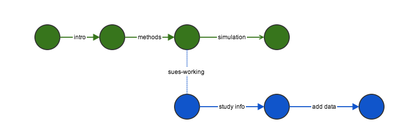
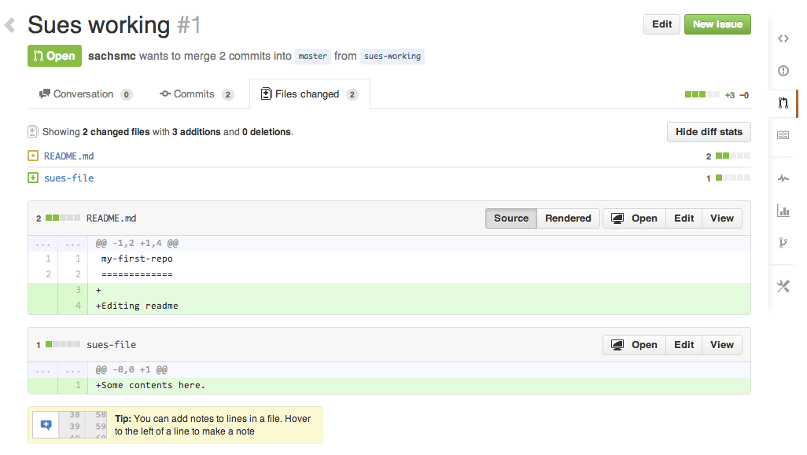
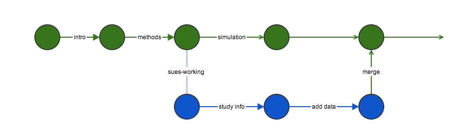

2025-05-27
Your closest collaborator is you six months ago, but you don’t reply to emails.
-Paul Wilson
git and Githubgit and http://github.com make version control and collaboration easierOnce a paper gets published, occasionally people want to use or extend the method.
“I would be very grateful if you are able to help me implement this tool in my dataset as well.”
“Could you please send me your code so that I can try to apply it to my example?”
“Would you please kindly e-mail me your article and other works in that field promptly.?”
Email is an ineffective tool for sharing code, data, documents
git
git is not dropbox!
Each commit should be minimally complete
Minimal
Complete
| Bad | Better |
|---|---|
| Fix bug | Ensure that sampling function works for small datasets |
| changing documentation | Improve documentation with a vignette tutorial |
| typo | Add a comma to README |
.tex file, some analyses in .R with data and outputCommits do not affect the other branch
branch
Push all of her changes to github, then submit a pull request.
pull


propose
issue
git is a structured approach to tracking content
git